我们介绍 MiMo-V2-Flash：一个总参数量为 309B、激活参数量为 15B 的 MoE 模型，旨在提供快速且强大的推理能力和 agent 能力。MiMo-V2-Flash 采用混合 attention 架构，将 SWA 与全局 attention 交错排列，滑动窗口大小为 128 个 token，混合比例为 5:1。模型采用 MTP，在 27 万亿个 token 上进行预训练，原生上下文长度为 32k，随后扩展到 256k。为高效扩展后训练计算规模，MiMo-V2-Flash 引入一种新的 MOPD 范式。在这一框架中，领域专用教师模型（例如通过大规模强化学习训练的模型）提供密集的 token 级奖励，使学生模型能够充分掌握教师的专长。尽管总参数量分别仅为 DeepSeek-V3.2 和 Kimi-K2 的 1/2 和 1/3，MiMo-V2-Flash 仍能与这些顶尖的开放权重模型相媲美。在推理时，通过将 MTP 用作 speculative decoding 的草稿模型，MiMo-V2-Flash 使用三层 MTP 可实现最高 3.6 的接受长度和 2.6 倍的 decoding 加速。我们将模型权重及三层 MTP 权重一并开源，以促进开放研究和社区协作。
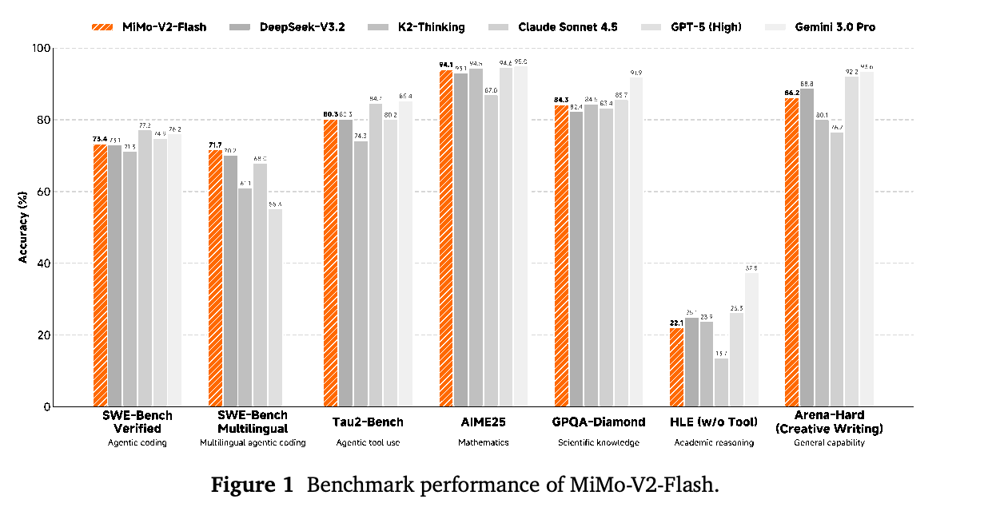
1 引言 ................................................................ 4
2 MiMo-V2-Flash 模型架构 .......................................... 5
2.1 整体架构 ...................................................... 5
2.2 混合 SWA 架构 ........................................ 6
2.2.1 模型架构实验 ................................................ 7
2.2.2 总结与讨论 .................................................. 8
2.3 轻量级 MTP ..................................... 9
2.3.1 使用 MTP 的动机 ............................................. 9
2.3.2 MiMo-V2-Flash 中的轻量级 MTP 设计 ............................. 9
3 预训练 .......................................................... 9
3.1 数据调度器 ................................................... 10
3.2 超参数 ....................................................... 10
3.3 评估 ......................................................... 11
3.3.1 评估设置 ................................................... 11
3.3.2 评估结果 ................................................... 11
4 后训练 ......................................................... 11
4.1 MOPD：一种新的后训练范式 .................. 11
4.2 SFT .............................................. 14
4.3 扩展强化学习（RL）规模 ........................................ 15
4.3.1 非 agent RL 训练 ............................................ 15
4.3.2 agent RL 训练 .............................................. 15
4.4 MOPD 的技术形式化 ............................................ 18
4.5 评估 ......................................................... 18
4.5.1 评估设置 ................................................... 18
4.5.2 评估结果 ................................................... 19
4.6 RL 基础设施 .................................................. 19
4.6.1 通过 rollout 路由重放（R3）稳定训练 ........................... 19
4.6.2 数据调度器 ................................................. 20
4.6.3 工具箱与工具管理器 .......................................... 21
5 MTP 加速 ....................................................... 21
5.1 MTP 接受长度 ................................................. 21
5.2 MTP 推理加速 ................................................. 21
6 结论、局限性与未来工作 .......................................... 22
A 贡献与致谢 ..................................................... 29
B SWE-Bench 中的 reward hacking .......................................... 31
C 上下文管理 ..................................................... 31
近期，迈向 AGI 的进展日益受到两个前沿方向的推动：高级推理链与自主 agent 工作流（Google DeepMind, 2025; Kimi Team, 2025b; Liu et al., 2025），两者都以大规模强化学习（RL）为基础。然而，构建可扩展的推理模型和 agent 面临一个共同的关键瓶颈：长上下文建模必须同时做到快速且强大。
在本项工作中，我们介绍 MiMo-V2-Flash，一个高效且具有成本效益的 LLM，具备强大的推理和 agent 性能。MiMo-V2-Flash 是总参数量为 309B 的 MoE，每个 token 激活 15B 参数。为缓解全 attention 的二次复杂度，MiMo-V2-Flash 采用将局部 SWA 与全局 attention 交错排列的混合 attention 机制。滑动窗口大小为 128 个 token，局部与全局 attention 的混合比例为 5:1，使长上下文的 KV cache 存储量和 attention 计算量减少到接近六分之一。借助可学习的 attention sink bias（Agarwal et al., 2025），尽管滑动窗口很小、混合比例较为激进，这种混合架构在长上下文场景中仍保持强大的建模能力。MiMo-V2-Flash 还引入 MTP，以提升训练性能并加速推理 decoding。尤其是，MTP 在提升 RL rollout 速度方面具有很大潜力，有助于将 LLM 扩展至更高的智能水平。凭借轻量级稠密 FFN 和 SWA，我们的 MTP 模块在实际应用中以较高接受率带来显著的 decoding 加速。
MiMo-V2-Flash 的预训练方案主要沿用 MiMo-7B（Xia et al., 2025），并进行了若干增强。训练采用 FP8 混合精度，实现了在 27T 个 token 上的高效大规模训练。模型最初以原生 32K 上下文进行预训练，随后扩展到 256K。所得预训练模型 MiMo-V2-Flash-Base 与 Kimi-K2-Base（Kimi Team, 2025c）和 DeepSeek-V3.2-Exp-Base（Liu et al., 2025）等领先开源基础模型进行了对比评估。MiMo-V2-Flash-Base 在通用基准上取得了有竞争力的性能，并在侧重推理的任务上超过同类模型。在长上下文检索方面，我们的混合 attention 架构在 32K 至 256K 的上下文长度上取得接近 100% 的成功率。在极端长上下文推理基准 GSM-Infinite（Zhou et al., 2025）上，MiMo-V2-Flash 表现稳健，从 16K 扩展至 128K 时性能下降很小。
在后训练中，我们着重高效扩展 RL 计算规模，以提高推理和 agent 能力。为此，MiMo-V2-Flash 引入一种称为 MOPD 的新后训练范式。该框架通过三阶段流程同时解决学习效率低和能力不均衡问题：（1）通用 SFT；（2）通过专门的 RL/SFT 训练领域专用教师模型；（3）MOPD，学生模型从两个互补信号中学习：在不同领域训练的专用教师提供的密集 token 级奖励，以及可验证的结果奖励。通过以这种方式整合不同专家的知识，MiMo-V2-Flash 在享有稳定、高效的学习动态的同时，掌握各领域教师的巅峰能力。
MiMo-V2-Flash 在大多数推理基准上的性能与 Kimi-K2-Thinking 和 DeepSeek-V3.2-Thinking 相当。在 LongBench V2 和 MRCR 等长上下文评估中，MiMo-V2-Flash 始终超过更大的全 attention 模型，验证了其混合 SWA 架构的稳健性。值得注意的是，该模型在 SWE-Bench Verified 上达到 73.4%，在 SWE-Bench Multilingual 上达到 71.7%，成为软件工程任务上领先的开源模型。模型权重（含三层 MTP 权重）发布于 https://github.com/XiaomiMiMo/MiMo-V2-Flash。
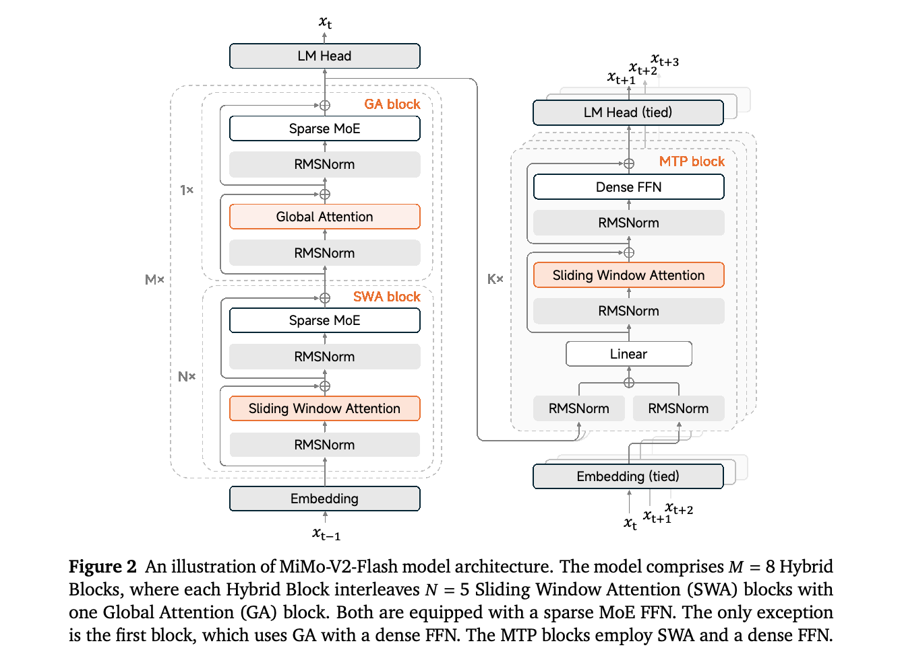
如图 2 所示，MiMo-V2-Flash 采用标准 Transformer（Vaswani et al., 2017）骨干，并加入 MoE（Shazeer et al., 2017）和混合 attention（Brown et al., 2020; Gemma Team, 2024, 2025; Kimi Team, 2025a; Li et al., 2025; Qwen Team, 2025）。MiMo-V2-Flash 主要由重复堆叠的混合模块构成，交错排列局部 SWA 和全局 attention（GA）。模型堆叠 \(M = 8\) 个混合模块，每个模块包含 \(N = 5\) 个连续 SWA 模块，随后接一个 GA 模块。唯一例外是最初的 Transformer 模块，它采用全局 attention 和稠密 FFN，以稳定早期的表征学习。MiMo-V2-Flash 使用的滑动窗口大小 \(W\) 为 128。SWA 模块与 GA 模块均使用稀疏 MoE FFN。每个 MoE 层共有 256 个专家，每个 token 激活 8 个专家，不包含共享专家。
MiMo-V2-Flash 还集成了 MTP（Gloeckle et al., 2024; Liu et al., 2024; Xia et al., 2025），以改善模型性能，包括质量和效率。值得注意的是，MTP 模块使用稠密 FFN 而非 MoE，并采用 SWA 而非 GA，因此可作为轻量级 speculative decoding 模块。每个 MTP 模块的参数量仅为 0.33B。
表 1 汇总了 MiMo-V2-Flash 的详细配置。模型包含 39 个 SWA 层和 9 个 GA 层。SWA 和 GA 均采用 GQA（Ainslie et al., 接下页
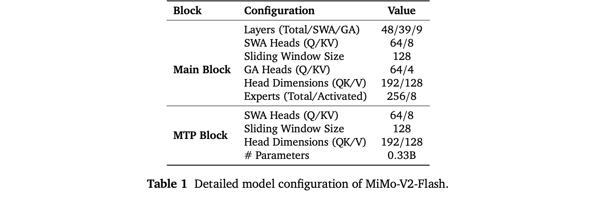
接上页：
2023）。具体而言，SWA 有 64 个查询头和 8 个键值头，GA 有 64 个查询头和 4 个键值头。SWA 与 GA 的单头维度相同：查询和键为 192，值为 128。RoPE（RoPE，Su et al. (2024)）仅应用于查询和键的前 64 个维度。遵循近期的最佳实践，我们采用类似 DeepSeek-V3（Liu et al., 2024）的 FP8 混合精度框架。具体而言，attention 输出投影、embedding 参数及输出头参数保留 BF16 精度，MoE 路由器参数则保持 FP32 精度。这种混合精度配置提高了数值稳定性，同时不会显著影响训练效率或内存占用。
SWA（Beltagy et al., 2020）将每个 token 的 attention 范围限制在局部窗口内，而非整个序列，从而大幅降低计算和内存复杂度。这自然促成了将 SWA 与全局 attention 交错排列的混合 attention 架构。然而，先前工作表明，过于激进地使用 SWA，例如采用很小的滑动窗口或很高的 SWA:GA 比例，会导致模型性能显著下降（Gemma Team, 2025），尤其是在长上下文任务上。最近引入的可学习 attention sink bias 允许模型在需要时向 token 分配很少甚至不分配 attention，显著增强了基于 SWA 的架构的建模能力（Agarwal et al., 2025）。尽管 attention sink 机制的确切理论基础仍是活跃的研究方向（Gu et al., 2024b; Qiu et al., 2025; Sun et al., 2024; Xiao et al., 2023），但我们在实验中观察到，可学习 attention sink bias 能够大幅提升混合 SWA 模型的性能，达到甚至超过全部使用 GA 层的基线。
在 MiMo-V2-Flash 中，我们的实现遵循 gpt-oss（Agarwal et al., 2025）的设计，对每个 attention 头，在 softmax 分母中加入一个可学习的 attention sink bias \(sink \in \mathbb{R}\)。具体而言，令某个 attention 头中 token \(i\) 与 \(j\) 之间的 attention logit 为：
其中，\(q_{i}\) 和 \(k_{j}\) 分别表示 token \(i\) 的查询和 token \(j\) 的键，\(d\) 为 attention 头维度。Attention 权重定义为：
最后，查询 \(i\) 的 attention 输出通过对值进行加权求和得到：
为验证设计选择的有效性，我们在一个 32B 稠密模型上进行探索性实证研究，查询和键的维度及旋转 embedding 配置均与上述设置保持一致。
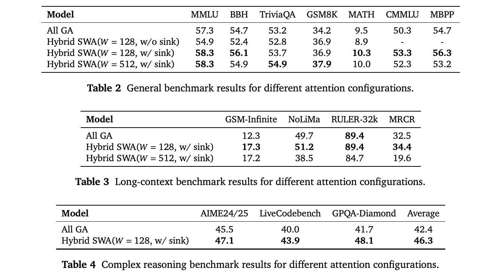
基线与基准。我们在对比设置中评估四种模型架构变体，包括全部使用全局 attention（All GA）的基线、一个窗口为 128 个 token 且不带 attention sink bias 的混合 SWA 模型，以及两个加入 attention sink bias、窗口大小分别为 128 和 512 的混合 SWA 模型。所有变体采用相同的训练流程：以 8,192 的序列长度在 250B 个 token 上预训练，再用额外 40B 个 token 将上下文扩展至 32,768，随后进行长上下文 SFT 及带有 CoT 监督的推理 SFT。接下页
接上页：
我们在涵盖通用能力、长上下文理解和复杂推理的基准上评估各模型变体。通用领域结果（表 2）来自未经长上下文扩展的预训练基础模型，使用 MMLU（Hendrycks et al., 2021a）、BBH（Suzgun et al., 2023）、TriviaQA（Joshi et al., 2017）、GSM8K（Cobbe et al., 2021）、MATH（Hendrycks et al., 2021b）、CMMLU（Li et al., 2023）和 MBPP（Austin et al., 2021）评估通用知识与推理能力。长上下文结果（表 3）包括对扩展了长上下文的基础模型在 GSM-Infinite（Zhou et al., 2025）、NoLiMa（Modarressi et al., 2025）和 RULER-32k（Hsieh et al., 2024）上的评估，以及对长上下文 SFT 模型在 MRCR（Vodrahalli et al., 2024）上的评估。对于 GSM-Infinite 和 NoLiMa，我们构建内部少样本基准，以在受控的长上下文设置下评估基础模型。复杂推理结果（表 4）则来自对推理 SFT 模型在 AIME24 与 AIME25（MAA, 2024）、LiveCodeBench（Jain et al., 2024）和 GPQA-Diamond（Rein et al., 2024）上的评估。
下面列出我们的主要实证发现：
Attention sink bias 的消融实验。如表 2 所示，不带汇聚偏置的混合 SWA（\(W = 128\)）在通用基准上出现明显性能下降，而引入 attention sink bias 后，相对于全 GA 基线，性能始终得到恢复或提升。因此，后续实验默认使用 attention sink bias。
SWA 的窗口大小。混合 SWA（\(W = 128\)）与混合 SWA（\(W = 512\)）在通用基准上表现相近（表 2）。然而，在进行长上下文扩展和长上下文 SFT 后，混合 SWA（\(W = 128\)）超过全 GA 基线，而 SWA（\(W = 512\)）出现显著退化（表 3）。
推理能力。如表 4 所示，混合 SWA（\(W = 128\)）在不同的高难度推理基准上均超过全 GA 基线，显示出复杂推理能力的明显改善。
我们的实验表明，混合 SWA（\(W = 128\)）不仅优于混合 SWA（\(W = 512\)），甚至可以超过全 GA 基线，这可能看起来有悖直觉。我们推测，这是更好的正则化与有效稀疏性共同作用的结果。较小窗口迫使模型关注局部上下文，形成一种归纳偏置，缓解对虚假模式的过拟合。此外，更窄的窗口（\(W = 128\)）迫使 SWA 建模局部信息，将长距离依赖交给全局 attention 层，从而形成更明确的分工，使学习更加准确、高效。相比之下，更大的窗口（\(W = 512\)）可能模糊这种区别，使 SWA 自身承担一部分长距离依赖建模，从而削弱局部与全局信息之间的分离，导致次优性能。
我们强调，这些观察和发现来自实证，源于我们特定的实验设置，包括模型规模、数据集和训练过程。尽管如此，我们希望这些观察能够为推理与 agent AI 模型时代关于高效 attention 架构的持续讨论提供一个额外视角，并推动社区进一步研究高效架构。
先前工作表明，MTP 是一种强大的训练目标，能够提高训练效率和模型质量（Gloeckle et al., 2024; Liu et al., 2024; Xia et al., 2025）。除了这些训练收益，我们更加重视将 MTP 作为自 speculative decoding 的原生草稿模型，以在实际部署中获得加速。下面从通用 LLM decoding 加速和 RL 训练加速两个角度阐述 MTP 如何加速推理。
加速 LLM decoding。由于算术强度较低，LLM decoding 本质上受到内存带宽限制。通常通过 batch 级并行提高 FFN 的算术强度，但这不能改善 attention 计算，因为每个请求都维护自己的 KV cache。相比之下，MTP 通过生成多个草稿 token，再由主模型并行验证，同时提高 FFN 和 attention 的算术强度。这种方法在不增加 KV cache I/O 的情况下实现了 token 级并行。
加速 RL 训练。MTP 加速特别适合 RL 训练（RadixArk Team, 2025），由于推理与 decoding 成本，rollout 阶段始终是主要瓶颈。MTP 解决了 RL 训练的两个关键挑战：
在 MiMo-V2-Flash 中，我们有意让 MTP 模块保持轻量，防止其成为新的推理瓶颈。我们使用小型稠密 FFN 而非 MoE，以限制参数量；采用 SWA 而非全局 attention（GA），以降低 KV cache 和 attention 计算成本。预训练时，仅为模型附加一个 MTP 头，避免额外训练开销。在后训练中，将这个头复制 \(K\) 次，形成 \(K\) 步 MTP 模块，并联合训练所有头进行多步预测。每个头接收主模型隐藏状态和 token embedding 作为输入，从而获得更丰富的预测信息。尽管设计轻量，MTP 模块仍十分有效，能够实现较高接受率。详细结果见第 5 节。
MiMo-V2-Flash 的预训练语料由 27 万亿个 token 组成，来自多种高质量来源，包括公开网络内容、图书、学术论文、代码、数学及接下页
接上页：
更广泛的 STEM 材料。我们的数据处理流程主要沿用 MiMo-7B（Xia et al., 2025），并有意向具有长距离依赖的数据倾斜。具体而言，我们着重采用长篇网络文档和精心筛选的代码语料，包括仓库级代码、拉取请求、问题单和提交历史，以增强模型捕捉长距离上下文关系及执行复杂多步推理的能力。
MiMo-V2-Flash 的预训练分为三个顺序阶段：
模型超参数。MiMo-V2-Flash 配置了 48 个 Transformer 层，包括 39 个 SWA 层和 9 个全局 attention 层。隐藏维度设为 4096。除第一层外，所有层都配备稀疏 MoE。每个 MoE 层包含 256 个路由专家，每个 token 激活 8 个专家，每个专家的中间隐藏维度为 2048。稠密层 FFN 的中间隐藏维度设为 16384。所有可学习参数随机初始化，标准差为 0.006。预训练阶段模型使用单个 MTP 层。总体而言，MiMo-V2-Flash 的总参数量为 309B，其中 15B 为激活参数。
训练超参数。我们采用 AdamW 优化器，\(\beta _{1} = 0.9\)、\(\beta _{2} = 0.95\)，权重衰减为 0.1。Gradient 裁剪的最大范数为 1.0。学习率调度分两个阶段。在阶段 1，学习率在最初 50B 个 token 内从 0 线性 warmup 到 \(3.2 \times 10^{-4}\)，随后在 12T 个 token 内保持为 \(3.2 \times 10^{-4}\)，最后在 10T 个 token 内按余弦调度衰减到 \(1.0 \times 10^{-4}\)。阶段 2 从 \(1.0 \times 10^{-4}\) 开始，在 4T 个 token 内按余弦调度衰减至 \(3.0 \times 10^{-5}\)。Batch 大小在最初 500B 个 token 内线性 warmup 至 2,048，并在两个阶段的剩余训练中保持不变。辅助损失方面，所有阶段的 MoE 序列辅助损失系数均为 \(1.0 \times 10^{-5}\)。阶段 1 和阶段 2 的专家偏置更新因子为 0.001。MTP 损失权重在阶段 1 为 0.3，在阶段 2 和阶段 3 为 0.1。
长上下文扩展。在阶段 1，我们将预训练序列长度设为 32,768，GA 的 RoPE 基频为 640,000，SWA 的 RoPE 基频为 10,000。在阶段 3，序列长度扩展到 262,144，GA 的 RoPE 基频调整为 5,000,000。阶段 3 的学习率按余弦调度从 \(3.0 \times 10^{-5}\) 衰减至 \(1.0 \times 10^{-5}\)，batch 大小固定为 256。阶段 3 的专家偏置更新因子降低至 \(1.0 \times 10^{-5}\)。
我们在一系列基准上评估 MiMo-V2-Flash-Base，涵盖多种能力：（1）通用语言理解和推理，包括 BBH（Suzgun et al., 2023）、MMLU（Hendrycks et al., 2021a）、MMLU-Redux（Gema et al., 2024）、MMLU-Pro（Wang et al., 2024）、DROP（Dua et al., 2019）、ARC（Clark et al., 2018）、HellaSwag（Zellers et al., 2019）、WinoGrande（Sakaguchi et al., 2020）、TriviaQA（Joshi et al., 2017）、GPQA-Diamond（Rein et al., 2024）、SuperGPQA（Du et al., 2025）和 SimpleQA（OpenAI, 2024）。（2）数学推理，包括 GSM8K（Cobbe et al., 2021）、MATH（Hendrycks et al., 2021b）及 AIME（MAA, 2024）（2024 与 2025）。（3）编程，包括 HumanEval+（Liu et al., 2023）、MBPP+（Liu et al., 2023）、CRUXEval（Gu et al., 2024a）、MultiPL-E（Cassano et al., 2022）、BigCodeBench（Zhuo et al., 2024）、LiveCodeBench-v6（Jain et al., 2024）及 SWE-Bench（Jimenez et al., 2024a）（少样本 Agentless Repair（Xia et al., 2024））。（4）中文理解，包括 C-Eval（Huang et al., 2023）、CMMLU（Li et al., 2023）和 C-SimpleQA（He et al., 2025）。（5）多语言理解，包括 GlobalMMLU（Singh et al., 2025）和 INCLUDE（Romanou et al., 2024）。（6）长上下文，包括 NIAH-Multi（Hsieh et al., 2024）和 GSM-Infinite（Zhou et al., 2025）（5-shot，Hard Ops-{2,4,6,8,10}）。
表 5 全面对比了 MiMo-V2-Flash-Base 与领先的开源基础模型（Kimi Team, 2025c; Liu et al., 2024）。MiMo-V2-Flash-Base 在大多数基准上表现出竞争力，并在推理任务（MMLU-Pro、GPQA-Diamond、AIME）上持续超过同类模型。在 SWE-Bench 上，其参数量不到 Kimi-K2-Base 的三分之一，却超过了这个明显更大的模型，凸显了我们的方法在真实代码 agent 任务中的优势。然而，受限于参数量，我们观察到 MiMo-V2-Flash 相比更大模型的知识容量较低，SimpleQA 的结果反映了这一点。
表 6 展示了各模型的长上下文能力。在长上下文检索方面，我们的模型架构在 32K 至 256K 上实现接近 100% 的成功率。在极端压力测试型长上下文推理基准 GSM-Infinite 上，MiMo-V2-Flash 也表现强劲，从 16K 到 128K 的性能下降很小。相比之下，作为稀疏 attention LLM 的 DeepSeek-V3.2-Exp 在 32K 以下取得最高分，但在 64K 和 128K 时显著退化，表明其在含噪声输入的长上下文推理中可能存在内在劣势。这些结果有力证明了我们的混合 SWA 架构、常规 32K 预训练和上下文扩展训练的有效性与可扩展性。
现代语言模型越来越依赖大量后训练来增强智能和能力。然而，当前后训练流程面临根本性挑战：能力不均衡，即提高一种技能会导致其他技能退化（“跷跷板”效应）；以及学习效率低，即现有方法在融合多个专用模型的知识时，无法充分利用训练信号。
我们提出 MOPD，这是一种统一的后训练范式，通过图 3 所示的三阶段框架解决上述挑战：
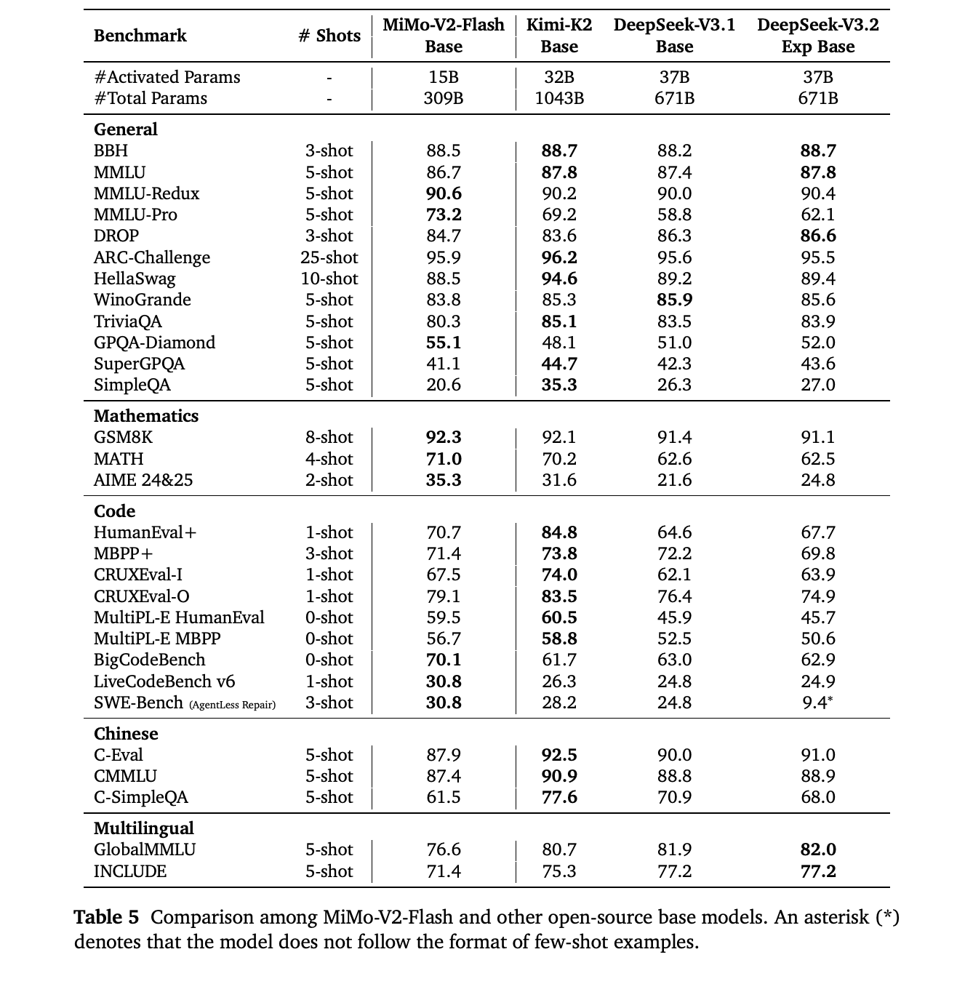
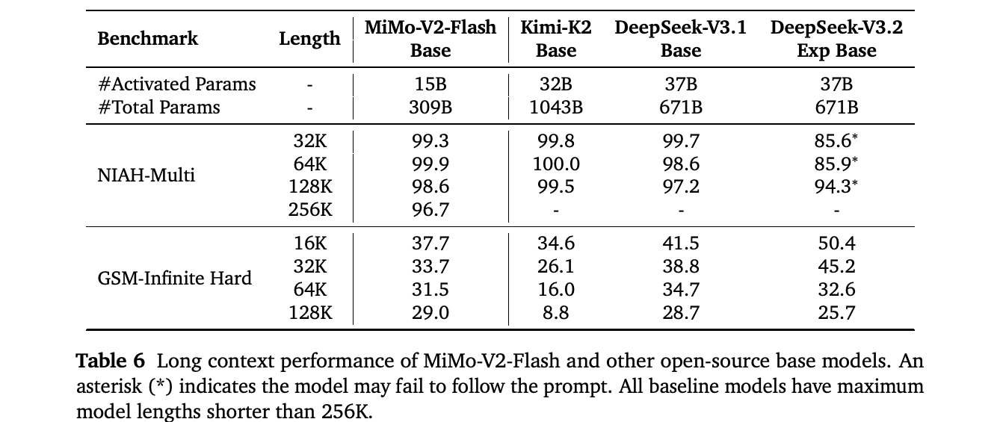
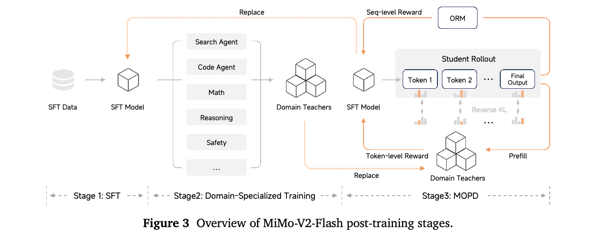
阶段 1：SFT。我们通过在高质量指令与响应对上进行监督学习，建立基础的指令遵循能力，使模型能够理解并执行不同领域的用户请求。
阶段 2：领域专用训练。我们通过在特定任务上独立进行 RL 优化，训练一组领域专用教师模型。这些任务包括 agent 能力（搜索、编程、通用工具使用）和非 agent 任务（数学推理、通用推理、安全对齐）。每个教师通过利用领域专用奖励信号进行针对性优化，在各自领域取得优异表现。
阶段 3：MOPD。我们将多教师知识整合形式化为 on-policy 强化学习过程，而不是合并模型参数或从专家生成静态离线数据集。学生模型从自身不断演化的分布中采样，并通过 KL 散度奖励接收领域专用教师的 token 级监督接下页
接上页：
（Agarwal et al., 2023; Gu et al., 2024c; Lu and Lab, 2025），有效结合专门能力，避免传统的能力权衡（表 7）。
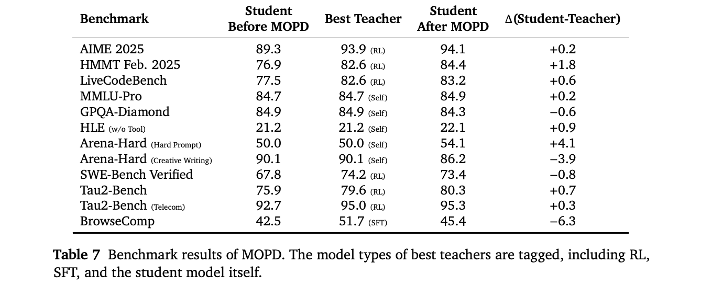
相较传统后训练方法，这一统一框架具有若干关键优势：
在下面的小节中，我们详细介绍 MOPD 范式的各个阶段，首先介绍 SFT（§4.2），随后介绍针对 agent 和非 agent 任务的专用 RL（§4.3），最后给出多教师蒸馏机制的技术形式化（§4.4）。
SFT 阶段是后训练流程的基础，将基础模型转化为能够遵循指令、有效回应不同任务的有用助手。这一阶段对于激活模型在预训练中获得的潜在能力，以及将输出对齐到所需格式和风格至关重要。
为实现这一目标，我们整理了数百万个训练样本，涵盖通用对话、推理、编程和 agent 任务等不同领域。这些样本覆盖思考和非思考两种模式，响应由我们内部的领域专用模型 checkpoint 生成。这种多样化训练混合数据确保模型预期使用场景中的能力得到全面激活。
通过初步实验，我们发现了 MoE SFT 训练的一个关键稳定性指标：gradient 为零的参数数量（num-zeros）。该指标能够提供训练不稳定的早期预警：num-zeros 上升意味着专家之间的负载均衡恶化，而 num-zeros 下降则表明模型明显过拟合训练数据。因此，在整个训练过程中维持稳定的 num-zeros，对于成功进行 SFT 至关重要。此外，这种稳定性对于保证后续 RL 阶段的稳健性和收敛性也十分重要。
实验表明，num-zeros 的稳定性主要依赖两个超参数：专家偏置更新率及 AdamW 优化器中的 \(\epsilon\) 参数。基于这些发现，我们采用以下训练超参数：学习率从 \(5.0 \times 10^{-5}\) 按余弦调度衰减至 \(5.0 \times 10^{-6}\)，batch 大小为 128，AdamW 的 \(\epsilon\) 设为 \(1.0 \times 10^{-8}\)。MoE 专家偏置更新率设为 \(1.0 \times 10^{-4}\)，序列辅助损失系数设为 \(1.0 \times 10^{-6}\)。
强化学习将模型能力推进到仅靠 SFT 无法达到的水平。我们根据任务是否涉及 agent 行为采用不同的 RL 策略，同时扩展非 agent 和 agent RL 训练规模，以最大化不同领域的性能。
非 agent RL 训练着重提高模型在单轮任务上的性能：模型生成完整响应，无须交互反馈或多步执行。主要目标是在可验证领域（如数学、编程、逻辑）提升推理准确率，同时在开放式对话中将输出对齐到有用性和安全性要求。
我们的奖励信号生成方式取决于任务特点。对于结果可验证的领域，我们使用结合程序化工具和 LLM 评判器的混合验证系统，对照整理好的问题与解答对自动评估正确性。对于有用性、安全性等主观属性，我们采用基于评分准则的框架，由先进的 LLM 评判器根据详细准则和参考答案评估响应，产生细粒度奖励信号，引导模型形成期望行为。
非 agent RL 侧重单轮推理和生成，而 agent RL 训练模型在交互式、多轮环境中运行，这些环境要求规划、行动执行及基于反馈的适应。我们沿两个关键维度扩展 agent RL：环境多样性和计算资源。
扩展 agent 环境多样性。我们构建了一组多样化 agent 训练环境，涵盖代码调试、终端操作、网页开发和通用工具使用接下页
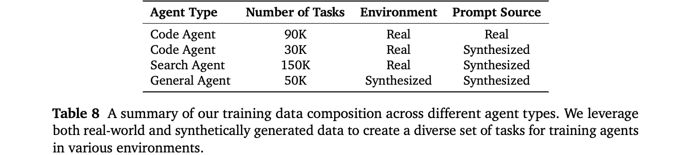
接上页：
（表 8）。每种环境针对不同能力，同时都要求多步推理和执行。下面详细介绍 agent 环境。
代码 agent。我们使用来自真实 GitHub 问题单的大规模代码 agent 任务进行训练，模型在 Agent Loop 中读取和编辑文件、执行命令，并根据可验证单元测试获得奖励。我们的关键发现是，持续扩大可用任务规模能够推动代码智能持续提升。为支持在超过 100,000 个代码任务上高效进行 RL 训练，我们开发了两个基础设施组件。首先，建立自动化环境配置流程，从仓库快照配置开发环境，并打包为容器镜像；该流程在 8 种编程语言上实现 70% 的成功率，由运行超过 10,000 个并发 pod 的大规模 Kubernetes 集群提供支持。其次，实现一个可无缝集成 Kubernetes、Docker 或本地后端的轻量级 agent 框架，提供三个原子工具（bash、str_replace、finish），仅通过 shell 命令与执行后端交互。这种设计消除了基于服务器的工具实现，采用不预设工作流的最小系统提示，让模型在训练中自行发现最佳实践。
终端 agent。除了 GitHub 问题单，我们还使用来自 Stack Overflow 和 Stack Exchange 的任务，增强基于终端的问题解决能力。我们选择需要高级技术知识的材料，将其转换为计算任务，并配套查询、Dockerfile 和测试用例。验证环境安装并按难度和可靠性筛选后，得到约 30,000 个查询及经过验证的执行环境。随后根据通过率进一步过滤，移除正确性判断不可靠或复杂度不足以支持有效 RL 训练的任务。
网页开发 agent。为改进网页开发代码生成，我们构建了以现实世界为基础的合成数据集，并配套多模态验证器。我们收集高质量的用户编写网页，使用 Playwright 执行生成代码，得到渲染视频，再通过多模态视觉判别器仅保留高质量样本；相比静态截图，基于视频的评估能减少视觉幻觉。我们从筛选后的网页反向构造用户查询，将其作为种子提示，合成覆盖八种网页类别的大规模 RL 数据，紧密贴合真实使用情况。基于视觉的验证器根据录制视频为 rollout 执行结果评分，综合评估视觉质量、功能正确性和可执行性，确保奖励同时反映外观与行为。
通用 agent。我们开发两种通用 agent 能力。搜索 agent 采用提供三个核心工具（search、open、find）的框架，实现自主网页探索。我们从种子实体出发，通过递归扩展事实图构建查询，难度随接下页
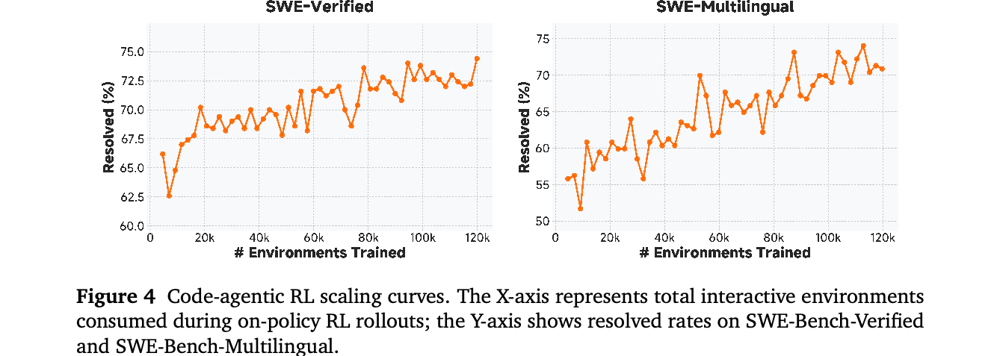
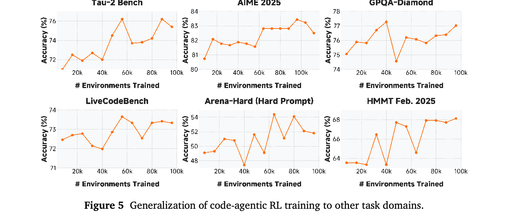
接上页：
关系链深度及细节遮蔽程度而变化，从而能够自动生成具有可验证答案的高难度搜索问题。函数调用 agent 在带有自定义工具集的合成应用环境中训练：工具集通过生成工具调用图构建，依据包括显式数据依赖（直接的输入输出关系）和隐式逻辑依赖（推理隐藏系统状态），因此要求模型同时具备数据传播与状态推断能力。
扩展 agent 计算规模。在上述多样化 agent 环境（表 8）上训练后，我们发现，扩展 agent RL 计算规模不仅提升代码 agent 性能，也能有效泛化到其他任务类型。图 4 展示了代码 agent 的 RL 训练曲线，模型在约 120K 个环境中进行了on-policyrollout和更新。这种规模扩展显著提升了 SFT 基础模型在 SWE-Bench-Verified 和 SWE-Bench-Multilingual 上的表现。此外，图 5 表明，大规模代码 agent RL 训练能够有效泛化到其他 agent 任务，以及数学、编程和通用推理基准，说明 agent 训练培养了具有广泛迁移能力的问题解决能力。
通过 SFT 建立基础，并通过领域专用 RL 训练专门教师后，我们现在形式化 MOPD 机制，将这些专门能力整合到统一的学生模型中。
具体而言，我们将多教师蒸馏表述为 on-policy 强化学习目标。令 \(\pi _{\theta}\) 表示在训练引擎中优化的目标学生策略，\(\mu _{\theta}\) 表示推理引擎采用的学生采样策略，\(\pi _{domainₓ}\) 表示针对从分布 \(D\) 采样的提示 \(x\) 所属领域的专用教师策略。令 sg[·] 表示停止 gradient 算子。学生与教师之间的反向 KL 散度损失定义为：
其 gradient 为：
遵循 Zhao et al.（2025），我们采用训练与推理之间的重要性采样，并丢弃差异较大的 token。随后，将 MOPD 的替代损失定义为：
其中：
默认情况下，我们将 MOPD 的优势估计与其他类型的优势估计相结合，例如使用 ORM 计算的优势估计，包括 GRPO（Shao et al., 2024）。令 \(\hat{A}_{ORM}\) 表示由 ORM 计算的优势估计，最终优势估计为：
图 6 展示了 MOPD 相较传统后训练方法的有效性。在数学推理（AIME 2025）和编程（LiveCodeBench）基准上，MOPD 成功保留并整合了多个教师的专门能力，在大多数领域达到或超过最强教师的性能。
我们在 MMLU-Pro（Wang et al., 2024）、GPQA-Diamond（Rein et al., 2024）、HLE 纯文本版（Phan et al., 2025）、AIME 2025（MAA, 2024）、LiveCodeBench（2024.08–2025.04）（Jain et al., 2024）、HMMT Feb. 2025（Balunović et al., 2025）、Arena-Hard（Li et al., 2024）、LongBench V2（Bai et al., 2025）、MRCR（Vodrahalli et al., 2024）（{2,4,8} 个目标片段，最长 128K）、SWE-Bench Verified（Jimenez et al., 2024b）、SWE-Bench Multilingual（Yang et al., 2025）、Terminal-Bench、BrowseComp（Wei et al., 2025）和 \(\tau ^{2}\)-Bench（Barres et al., 2025）上评估 MiMo-V2-Flash。
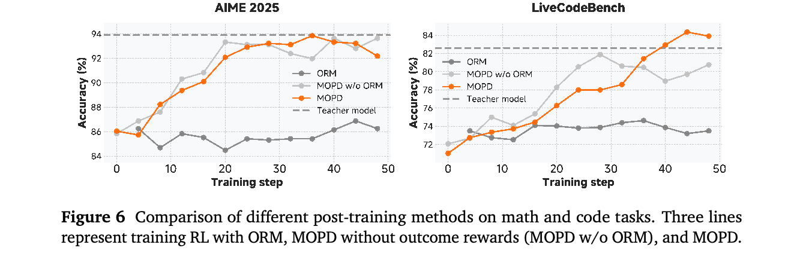
表 9 展示了评估结果。MiMo-V2-Flash 在大多数推理基准上的性能与 Kimi-K2-Thinking 和 DeepSeek-V3.2-Thinking 相当。模型也保持了有竞争力的通用写作能力，能够在开放式任务上生成高质量响应。在长上下文评估中，我们的模型超过了明显更大的全局 attention LLM Kimi-K2-Thinking，体现出混合 SWA 架构强大的长上下文能力。
值得注意的是，MiMo-V2-Flash 在 SWE-Bench Verified 上达到 73.4%，超过所有开源竞争模型，并接近 GPT-5-High 的表现。在 SWE-Bench Multilingual 上，我们的模型解决了 71.7% 的问题，成为软件工程任务上能力最强的开源 LLM。这些结果凸显了超大规模 agent RL 训练的有效性。在 Terminal Bench 上，模型也取得了有竞争力的分数。
在搜索 agent 评估中，MiMo-V2-Flash 在 BrowseComp 上得到 45.4 分，使用附录 C 中介绍的上下文管理方法后进一步提升至 58.3。在 \(\tau ^{2}\)-Bench 的通用工具使用评估中，我们采用 DeepSeek-V3.2 作为用户 agent，取得各类别分数：95.3（电信）、79.5（零售）、66.0（航空）。
综合而言，这些结果验证了 MOPD 后训练范式下超大规模 RL 训练的有效性，并凸显模型在真实编程、推理和 agent 工作流中的强大潜力。
我们的 RL（及 MOPD）基础设施采用 SGLang（Zheng et al., 2024）作为推理引擎，采用 Megatron-LM（Shoeybi et al., 2019）作为训练引擎。训练和推理均采用 FP8。为支持稳定、高效且灵活的 RL 训练，我们实现了三个扩展模块：rollout 路由重放（Ma et al., 2025）（第 4.6.1 节）、数据调度器（第 4.6.2 节）以及与工具箱配合的工具管理器（第 4.6.3 节）。
由于数值精度问题，MoE 模型在 rollout 与训练阶段的专家路由存在不一致（He and Lab, 2025; Yao et al., 2025）。我们提出 rollout 路由重放（R3）（Ma et al., 2025），在 RL 训练中使用 rollout 时相同的路由专家，并通过优化数据类型及通信重叠，使额外开销可以忽略。对于多轮 agent 训练，接下页
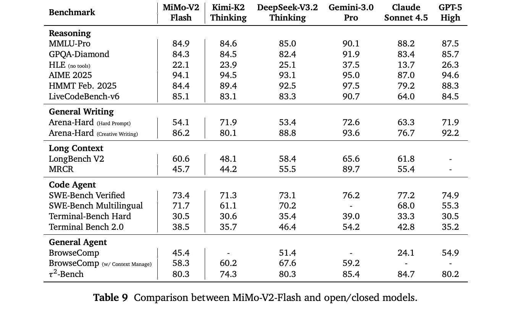
接上页：
我们在 rollout 时采用请求级前缀缓存。该缓存保存前几轮的 KVCache 和 MoE 路由专家，以便在同一请求的后续生成步骤中复用。与当前推理引擎普遍使用的 radix 缓存不同，我们的请求级前缀缓存避免重新进行 prefill 或在请求之间共享输出缓存，从而保证路由专家的采样一致性。
对于 MiMo-V2-Flash，我们扩展了 Seamless Rollout Engine（Xia et al., 2025），实现一个数据调度器，以细粒度序列而非 micro-batch 为单位进行无缝调度，解决分布式 MoE 训练中的 GPU 空闲问题。在动态采样中，随着序列返回并进行奖励计算，我们参考历史通过率，在必要时以负载均衡方式向 GPU 分配新提示。我们集成 partial rollout（Fu et al., 2025; Kimi Team, 2025b），将过长轨迹分配到多个步骤，同时限制每批中的陈旧程度和部分样本比例。通过对 partial rollout 采用感知陈旧程度的截断重要性采样，我们在不损害模型质量的情况下显著加速 RL 训练。
数据调度器支持按数据源设置配置（采样配额、调度优先级、长度限制、温度），并拟合通过率，按配置比例接受样本。基于优先级的调度使具有不同时间模式的数据源的奖励计算与推理相互重叠，从而保持较高的 GPU 利用率。
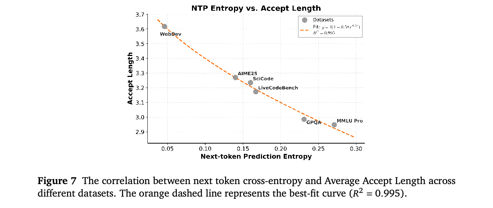
我们实现工具箱（Toolbox）和工具管理器（Tool Manager），解决 RL agent 训练中的全局资源争用和局部低效问题。这些模块利用 Ray（Moritz et al., 2018）进行高效调度。工具箱作为集中式资源分配器，为并发任务的工具执行资源配额和 QPS 限制。它采用具有容错能力的 Ray actor 池，消除冷启动延迟。工具管理器与 rollout 引擎集成，配合工具箱，通过环境 warmup 和序列级异步奖励计算加速训练，并通过超时恢复和实时监控保持训练稳定性。通过分离工具管理与 rollout 工作流，工具箱将任务专用逻辑与系统级策略隔离开来，实现模块化扩展，同时不影响稳定性。
我们分析了模型的预测不确定性（以下一个 token 的交叉熵衡量）与 MTP 模块效率之间的关系。如图 7 所示，我们在从代码生成（如 WebDev、LiveCodeBench）到复杂推理任务（如 AIME25、MMLU Pro）等多种基准上，评估了三层 MTP 的平均接受长度。
结果表明，两者存在很强的负相关关系：较低熵的上下文（如 WebDev）允许显著更长的接受序列，达到约 3.6 个 token。相反，内在不确定性较高的任务（如 MMLU Pro）因预测分歧增加而表现出较短接受长度。这种行为可由经过对数变换的拟合准确建模（\(y = 4(1 - 0.58x^{0.58})\)），R² 为 0.995，表明下一个 token 的交叉熵是决定 MTP 吞吐量的主要因素。
我们在不同 batch 大小（每个节点）和接受长度下，测量使用三层 MTP 的 MiMo-V2-Flash 的 decoding 加速比，输入长度为 16K，输出长度为 1K。表 10 的结果接下页
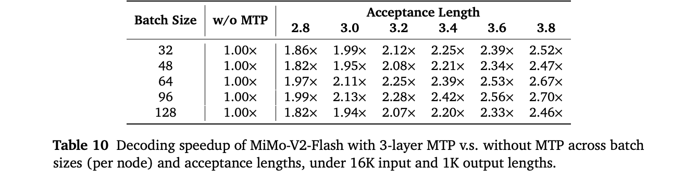
接上页：
表明，MTP 在没有额外硬件成本的情况下始终优于基线。值得注意的是，加速比随接受长度线性增长。在不同 batch 大小下，MTP 的加速比不同，这取决于相应的计算和 I/O 需求，以及算子内核效率。实践中，研究人员和工程师应根据硬件 roofline 模型，同时调整 batch 大小和 MTP 层数，优化速度与成本之间的权衡。
MiMo-V2-Flash 通过混合 SWA 架构、轻量级 MTP 和 MOPD 后训练范式，实现了强大的推理与 agent 能力，以及快速推理。凭借这些优势，MiMo-V2-Flash 能与 DeepSeek-V3.2、Kimi-K2 等更大的开放权重模型相媲美。然而，与最强的闭源权重模型仍存在明显差距，我们计划通过扩大模型规模和训练计算量缩小这一差距。此外，当前架构探索仍处于初步阶段，对设计权衡的分析有限。未来工作将着重设计更稳健、更高效、面向 agent 的模型架构。我们还计划增加 MOPD 中教师与学生迭代协同演化的计算量，充分释放其潜力。
R. Agarwal, N. Vieillard, Y. Zhou, P. Stańczyk, S. Ramos, M. Geist, and O. Bachem. 语言模型的 OPD：从自身生成的错误中学习。载于 International Conference on Learning Representations, 2023。URL https://api.semanticscholar.org/CorpusID:263610088。
S. Agarwal, L. Ahmad, J. Ai, S. Altman, A. Applebaum, E. Arbus, R. K. Arora, Y. Bai, B. Baker, H. Bao, 等。gpt-oss-120b 与 gpt-oss-20b 模型卡。arXiv 预印本 arXiv:2508.10925, 2025。
J. Ainslie, J. Lee-Thorp, M. De Jong, Y. Zemlyanskiy, F. Lebrón, and S. Sanghai. GQA：从多头 checkpoint 训练广义多查询 Transformer 模型。arXiv 预印本 arXiv:2305.13245, 2023。
J. Austin, A. Odena, M. Nye, M. Bosma, H. Michalewski, D. Dohan, E. Jiang, C. Cai, M. Terry, Q. Le, 等。使用 LLM 进行程序合成。ArXiv 预印本，abs/2108.07732, 2021。URL https://arxiv.org/abs/2108.07732。
Y. Bai, S. Tu, J. Zhang, H. Peng, X. Wang, X. Lv, S. Cao, J. Xu, L. Hou, Y. Dong, 等。LongBench V2：面向真实长上下文多任务的更深层理解与推理。出版信息接下页
载于 Proceedings of the 63rd Annual Meeting of the Association for Computational Linguistics (第 1 卷：长文), 页码 3639–3664, 2025.
M. Balunović, J. Dekoninck, I. Petrov, N. Jovanović, and M. Vechev. MathArena：在未受污染的数学竞赛上评估 LLM。 arXiv 预印本 arXiv:2505.23281, 2025.
V. Barres, H. Dong, S. Ray, X. Si, and K. Narasimhan. τ²-Bench：在双重控制环境中评估对话 agent。 arXiv 预印本 arXiv:2506.07982, 2025.
I. Beltagy, M. E. Peters, and A. Cohan. Longformer：长文档 Transformer。 arXiv 预印本 arXiv:2004.05150, 2020.
T. Brown, B. Mann, N. Ryder, M. Subbiah, J. D. Kaplan, P. Dhariwal, A. Neelakantan, P. Shyam, G. Sastry, A. Askell, 等 语言模型是少样本学习器。 Advances in neural information processing systems, 33:1877–1901, 2020.
F. Cassano, J. Gouwar, D. Nguyen, S. Nguyen, L. Phipps-Costin, D. Pinckney, M.-H. Yee, Y. Zi, C. J. Anderson, M. Q. Feldman, 等 MultiPL-E：一种可扩展且可拓展的神经代码生成基准评估方法。 arXiv 预印本 arXiv:2208.08227, 2022.
P. Clark, I. Cowhey, O. Etzioni, T. Khot, A. Sabharwal, C. Schoenick, and O. Tafjord. 你认为已经解决问答问题了吗？试试 ARC，即 AI2 推理挑战。 ArXiv 预印本, abs/1803.05457, 2018. URL https://arxiv.org/abs/1803.05457.
K. Cobbe, V. Kosaraju, M. Bavarian, M. Chen, H. Jun, L. Kaiser, M. Plappert, J. Tworek, J. Hilton, R. Nakano, 等 训练验证器以解决数学应用题。 ArXiv 预印本, abs/2110.14168, 2021. URL https://arxiv.org/abs/2110.14168.
X. Du, Y. Yao, K. Ma, B. Wang, T. Zheng, K. Zhu, M. Liu, Y. Liang, X. Jin, Z. Wei, 等 SuperGPQA：将 LLM 评估扩展到 285 个研究生学科。 ArXiv 预印本, abs/2502.14739, 2025. URL https://arxiv.org/abs/2502.14739.
D. Dua, Y. Wang, P. Dasigi, G. Stanovsky, S. Singh, and M. Gardner. DROP：一种要求对段落进行离散推理的阅读理解基准。 载于 J. Burstein, C. Doran, and T. Solorio, 编， Proceedings of the 2019 Conference of the North American Chapter of the Association for Computational Linguistics: Human Language Technologies, 第 1 卷（长文与短文）, 页码 2368–2378, Minneapolis, Minnesota, 2019. Association for Computational Linguistics. doi: 10.18653/v1/N19-1246. URL https://aclanthology.org/N19-1246.
W. Fu, J. Gao, X. Shen, C. Zhu, Z. Mei, C. He, S. Xu, G. Wei, J. Mei, J. Wang, 等 AReaL：面向语言推理的大规模异步强化学习系统。 arXiv 预印本 arXiv:2505.24298, 2025.
W. Gao, Y. Zhao, D. An, T. Wu, L. Cao, S. Xiong, J. Huang, W. Wang, S. Yang, W. Su, 等 RollPacker：缓解长尾 rollout，实现快速同步 RL 后训练。 arXiv 预印本 arXiv:2509.21009, 2025.
A. P. Gema, J. O. J. Leang, G. Hong, A. Devoto, A. C. M. Mancino, R. Saxena, X. He, Y. Zhao, X. Du, M. R. G. Madani, 等 我们已经完成 MMLU 了吗？ ArXiv 预印本, abs/2406.04127, 2024. URL https://arxiv.org/abs/2406.04127.
Gemma Team. Gemma 2：在实用规模下改进开放语言模型。 arXiv 预印本 arXiv:2408.00118, 2024.
Gemma Team. Gemma 3 技术报告。 arXiv 预印本 arXiv:2503.19786, 2025.
F. Gloeckle, B. Y. Idrissi, B. Rozière, D. Lopez-Paz, and G. Synnaeve. 通过 MTP 获得更好、更快的 LLM。 arXiv 预印本 arXiv:2404.19737, 2024.
Google DeepMind. Gemini 3 Pro 模型卡。 https://storage.googleapis.com/deepmind-media/Model-Cards/Gemini-3-Pro-Model-Card.pdf, 2025 年 11 月.
A. Gu, B. Rozière, H. J. Leather, A. Solar-Lezama, G. Synnaeve, and S. Wang. CRUXEval：代码推理、理解和执行基准。 载于 Forty-first International Conference on Machine Learning, ICML 2024, Vienna, Austria, July 21-27, 2024. OpenReview.net, 2024a. URL https://openreview.net/forum?id=Ffpg52swvg.
X. Gu, T. Pang, C. Du, Q. Liu, F. Zhang, C. Du, Y. Wang, and M. Lin. 语言模型中的 attention sink 何时出现：实证视角。 arXiv 预印本 arXiv:2410.10781, 2024b.
Y. Gu, L. Dong, F. Wei, and M. Huang. MiniLLM：LLM 的知识蒸馏。 载于 Proceedings of ICLR, 2024c.
H. He and T. M. Lab. 克服 LLM 推理中的非确定性。 Thinking Machines Lab: Connectionism, 2025. doi: 10.64434/tml.20250910. https://thinkingmachines.ai/blog/defeating-nondeterminism-in-llm-inference/.
Y. He, S. Li, J. Liu, Y. Tan, W. Wang, H. Huang, X. Bu, H. Guo, C. Hu, B. Zheng, 等 Chinese SimpleQA：LLM 的中文事实性评估。 载于 Proceedings of the 63rd Annual Meeting of the Association for Computational Linguistics (第 1 卷：长文), 页码 19182–19208, 2025.
D. Hendrycks, C. Burns, S. Basart, A. Zou, M. Mazeika, D. Song, and J. Steinhardt. 衡量大规模多任务语言理解能力。 载于 9th International Conference on Learning Representations, ICLR 2021, Virtual Event, Austria, May 3-7, 2021. OpenReview.net, 2021a. URL https://openreview.net/forum?id=d7KBjmI3GmQ.
D. Hendrycks, C. Burns, S. Kadavath, A. Arora, S. Basart, E. Tang, D. Song, and J. Steinhardt. 利用 MATH 数据集衡量数学问题解决能力。 ArXiv 预印本, abs/2103.03874, 2021b. URL https://arxiv.org/abs/2103.03874.
C.-P. Hsieh, S. Sun, S. Kriman, S. Acharya, D. Rekesh, F. Jia, Y. Zhang, and B. Ginsburg. RULER：你的长上下文语言模型的真实上下文长度是多少？ arXiv 预印本 arXiv:2404.06654, 2024.
Y. Huang, Y. Bai, Z. Zhu, J. Zhang, J. Zhang, T. Su, J. Liu, C. Lv, Y. Zhang, J. Lei, Y. Fu, M. Sun, and J. He. C-Eval：面向基础模型的多层次、多学科中文评估套件。 载于 A. Oh, T. Naumann, A. Globerson, K. Saenko, M. Hardt, and S. Levine, 编， Advances in Neural Information Processing Systems 36: Annual Conference on Neural Information Processing Systems 2023, NeurIPS 2023, New Orleans, LA, USA, December 10 - 16, 2023, 2023. URL http://papers.nips.cc/paper_files/paper/2023/hash/c6ec1844bec96d6d32ae95ae694e23d8-Abstract-Datasets_and_Benchmarks.html.
N. Jain, K. Han, A. Gu, W.-D. Li, F. Yan, T. Zhang, S. Wang, A. Solar-Lezama, K. Sen, and I. Stoica. LiveCodeBench：对代码 LLM 进行全面且无污染的评估。 ArXiv 预印本, abs/2403.07974, 2024. URL https://arxiv.org/abs/2403.07974.
C. E. Jimenez, J. Yang, A. Wettig, S. Yao, K. Pei, O. Press, and K. R. Narasimhan. SWE-Bench：语言模型能解决真实 GitHub 问题单吗？ 载于 The Twelfth International Conference on Learning Representations, ICLR 2024, Vienna, Austria, May 7-11, 2024. OpenReview.net, 2024a. URL https://openreview.net/forum?id=VTF8yNQM66.
C. E. Jimenez, J. Yang, A. Wettig, S. Yao, K. Pei, O. Press, and K. R. Narasimhan. SWE-Bench：语言模型能解决真实 GitHub 问题单吗？ 载于 The Twelfth International Conference on Learning Representations, 2024b. URL https://openreview.net/forum?id=VTF8yNQM66.
M. Joshi, E. Choi, D. Weld, and L. Zettlemoyer. TriviaQA：面向阅读理解的大规模远程监督挑战数据集。 载于 R. Barzilay and M.-Y. Kan, 编， Proceedings of the 55th Annual Meeting of the Association for Computational Linguistics (第 1 卷：长文), 页码 1601–1611, Vancouver, Canada, 2017. Association for Computational Linguistics. doi: 10.18653/v1/P17-1147. URL https://aclanthology.org/P17-1147.
Kimi Team. Kimi Linear：一种表达能力强且高效的 attention 架构。 arXiv 预印本 arXiv:2510.26692, 2025a.
Kimi Team. Kimi k1.5：利用 LLM 扩展强化学习规模。 arXiv 预印本 arXiv:2501.12599, 2025b.
Kimi Team. Kimi K2：开放的 agent 智能。 arXiv 预印本 arXiv:2507.20534, 2025c.
A. Li, B. Gong, B. Yang, B. Shan, C. Liu, C. Zhu, C. Zhang, C. Guo, D. Chen, D. Li, 等 MiniMax-01：利用 Lightning Attention 扩展基础模型规模。 arXiv 预印本 arXiv:2501.08313, 2025.
H. Li, Y. Zhang, F. Koto, Y. Yang, H. Zhao, Y. Gong, N. Duan, and T. Baldwin. CMMLU：衡量中文大规模多任务语言理解能力。 ArXiv 预印本, abs/2306.09212, 2023. URL https://arxiv.org/abs/2306.09212.
T. Li, W.-L. Chiang, E. Frick, L. Dunlap, B. Zhu, J. E. Gonzalez, and I. Stoica. 从实时数据到高质量基准：Arena-Hard 流程, 2024 年 4 月. URL https://lmsys.org/blog/2024-04-19-arena-hard/.
A. Liu, B. Feng, B. Xue, B. Wang, B. Wu, C. Lu, C. Zhao, C. Deng, C. Zhang, C. Ruan, 等 DeepSeek-V3 技术报告。 arXiv 预印本 arXiv:2412.19437, 2024.
A. Liu, A. Mei, B. Lin, B. Xue, B. Wang, B. Xu, B. Wu, B. Zhang, C. Lin, C. Dong, 等 DeepSeek-V3.2：推进开放 LLM 的前沿。 arXiv 预印本 arXiv:2512.02556, 2025.
J. Liu, C. S. Xia, Y. Wang, and L. Zhang. ChatGPT 为你生成的代码真的正确吗？对 LLM 代码生成进行严格评估。 载于 A. Oh, T. Naumann, A. Globerson, K. Saenko, M. Hardt, and S. Levine, 编， Advances in Neural Information Processing Systems 36: Annual Conference on Neural Information Processing Systems 2023, NeurIPS 2023, New Orleans, LA, USA, December 10 - 16, 2023, 2023. URL http://papers.nips.cc/paper_files/paper/2023/hash/43e9d647ccd3e4b7b5baab53f0368686-Abstract-Conference.html.
K. Lu and T. M. Lab. OPD。 Thinking Machines Lab: Connectionism, 2025. doi: 10.64434/tml.20251026. https://thinkingmachines.ai/blog/on-policy-distillation.
W. Ma, H. Zhang, L. Zhao, Y. Song, Y. Wang, Z. Sui, and F. Luo. 通过对齐训练与推理路由器稳定 MoE 强化学习。 arXiv 预印本 arXiv:2510.11370, 2025.
MAA. 美国数学邀请赛（AIME）。 载于 American Invitational Mathematics Examination - AIME, 2024. URL https://maa.org/math-competitions/american-invitational-mathematics-examination-aime.
A. Modarressi, H. Deilamsalehy, F. Dernoncourt, T. Bui, R. A. Rossi, S. Yoon, and H. Schütze. NoLiMa：超越字面匹配的长上下文评估。 arXiv 预印本 arXiv:2502.05167, 2025.
P. Moritz, R. Nishihara, S. Wang, A. Tumanov, R. Liaw, E. Liang, M. Elibol, Z. Yang, W. Paul, M. I. Jordan, 等 Ray：面向新兴 AI 应用的分布式框架。 载于 13th USENIX symposium on operating systems design and implementation (OSDI 18), 页码 561–577, 2018.
OpenAI. 介绍 SimpleQA。 https://openai.com/index/introducing-simpleqa/, 2024.
L. Phan, A. Gatti, Z. Han, N. Li, J. Hu, H. Zhang, C. B. C. Zhang, M. Shaaban, J. Ling, S. Shi, 等 人类最后的考试。 arXiv 预印本 arXiv:2501.14249, 2025.
Z. Qiu, Z. Wang, B. Zheng, Z. Huang, K. Wen, S. Yang, R. Men, L. Yu, F. Huang, S. Huang, 等 LLM 的 gated attention：非线性、稀疏性及无 attention sink。 arXiv 预印本 arXiv:2505.06708, 2025.
Qwen Team. Qwen3-Next：迈向极致训练与推理效率。 https://qwen.ai/blog?id=4074cca80393150c248e508aa62983f9cb7d27cd&from=research.latest-advancements-list, 2025 年 9 月.
RadixArk Team. 介绍 Miles：推动大规模 MoE 训练的 RL 框架。 https://lmsys.org/blog/2025-11-19-miles/, 2025 年 11 月.
D. Rein, B. L. Hou, A. C. Stickland, J. Petty, R. Y. Pang, J. Dirani, J. Michael, and S. R. Bowman. GPQA：无法仅靠 Google 搜索解决的研究生级问答基准。 载于 First Conference on Language Modeling, 2024.
A. Romanou, N. Foroutan, A. Sotnikova, Z. Chen, S. H. Nelaturu, S. Singh, R. Maheshwary, M. Altomare, M. A. Haggag, A. Amayuelas, 等 INCLUDE：利用地区知识评估多语言理解能力。 arXiv 预印本 arXiv:2411.19799, 2024.
K. Sakaguchi, R. L. Bras, C. Bhagavatula, and Y. Choi. WinoGrande：大规模对抗式 Winograd Schema 挑战。 载于 The Thirty-Fourth AAAI Conference on Artificial Intelligence, AAAI 2020, The Thirty-Second Innovative Applications of Artificial Intelligence Conference, IAAI 2020, The Tenth AAAI Symposium on Educational Advances in Artificial Intelligence, EAAI 2020, New York, NY, USA, February 7-12, 2020, 页码 8732–8740. AAAI Press, 2020. URL https://aaai.org/ojs/index.php/AAAI/article/view/6399.
J. Schulman, F. Wolski, P. Dhariwal, A. Radford, and O. Klimov. PPO 算法。 arXiv 预印本 arXiv:1707.06347, 2017.
Z. Shao, P. Wang, Q. Zhu, R. Xu, J. Song, X. Bi, H. Zhang, M. Zhang, Y. K. Li, Y. Wu, and D. Guo. DeepSeekMath：突破开放语言模型的数学推理极限, 2024. URL https://arxiv.org/abs/2402.03300.
N. Shazeer, A. Mirhoseini, K. Maziarz, A. Davis, Q. Le, G. Hinton, and J. Dean. 超大规模神经网络：稀疏门控 MoE 层。 arXiv 预印本 arXiv:1701.06538, 2017.
M. Shoeybi, M. Patwary, R. Puri, P. LeGresley, J. Casper, and B. Catanzaro. Megatron-LM：使用模型并行训练数十亿参数语言模型。 arXiv 预印本 arXiv:1909.08053, 2019.
S. Singh, A. Romanou, C. Fourrier, D. I. Adelani, J. G. Ngui, D. Vila-Suero, P. Limkonchotiwat, K. Marchisio, W. Q. Leong, Y. Susanto, 等 Global MMLU：理解并处理多语言评估中的文化和语言偏差。 载于 Proceedings of the 63rd Annual Meeting of the Association for Computational Linguistics (第 1 卷：长文), 页码 18761–18799, 2025.
J. Su, M. Ahmed, Y. Lu, S. Pan, W. Bo, and Y. Liu. RoFormer：利用 RoPE 增强 Transformer。 Neurocomputing, 568:127063, 2024.
M. Sun, X. Chen, J. Z. Kolter, and Z. Liu. LLM 中的巨大激活值。 arXiv 预印本 arXiv:2402.17762, 2024.
M. Suzgun, N. Scales, N. Schärli, S. Gehrmann, Y. Tay, H. W. Chung, A. Chowdhery, Q. Le, E. Chi, D. Zhou, and J. Wei. 高难度 BIG-bench 任务，以及 CoT 能否解决这些任务。 载于 A. Rogers, J. Boyd-Graber, and N. Okazaki, 编， Findings of the Association for Computational Linguistics: ACL 2023, 页码 13003–13051, Toronto, Canada, 2023. Association for Computational Linguistics. doi: 10.18653/v1/2023.findings-acl.824. URL https://aclanthology.org/2023.findings-acl.824.
A. Vaswani, N. Shazeer, N. Parmar, J. Uszkoreit, L. Jones, A. N. Gomez, Ł. Kaiser, and I. Polosukhin. Attention 就是你所需要的一切。 Advances in neural information processing systems, 30, 2017.
K. Vodrahalli, S. Ontanon, N. Tripuraneni, K. Xu, S. Jain, R. Shivanna, J. Hui, N. Dikkala, M. Kazemi, B. Fatemi, 等 Michelangelo：通过潜在结构查询开展超越 Needle-in-a-Haystack 任务的长上下文评估。 arXiv 预印本 arXiv:2409.12640, 2024.
Y. Wang, X. Ma, G. Zhang, Y. Ni, A. Chandra, S. Guo, W. Ren, A. Arulraj, X. He, Z. Jiang, T. Li, M. Ku, K. Wang, A. Zhuang, R. Fan, X. Yue, and W. Chen. MMLU-Pro：一种更稳健、更具挑战性的多任务语言理解基准。 载于 A. Globersons, L. Mackey, D. Belgrave, A. Fan, U. Paquet, J. M. Tomczak, and C. Zhang, 编， Advances in Neural Information Processing Systems 38: Annual Conference on Neural Information Processing Systems 2024, NeurIPS 2024, Vancouver, BC, Canada, December 10 - 15, 2024, 2024. URL http://papers.nips.cc/paper_files/paper/2024/hash/ad236edc564f3e3156e1b2feafb99a24-Abstract-Datasets_and_Benchmarks_Track.html.
J. Wei, Z. Sun, S. Papay, S. McKinney, J. Han, I. Fulford, H. W. Chung, A. T. Passos, W. Fedus, and A. Glaese. BrowseComp：面向浏览 agent 的简单但富有挑战性的基准。 arXiv 预印本 arXiv:2504.12516, 2025.
B. Xia, B. Shen, D. Zhu, D. Zhang, G. Wang, H. Zhang, H. Liu, J. Xiao, J. Dong, L. Zhao, 等 MiMo：释放语言模型的推理潜力——从预训练到后训练。 arXiv 预印本 arXiv:2505.07608, 2025.
C. S. Xia, Y. Deng, S. Dunn, and L. Zhang. Agentless：揭开基于 LLM 的软件工程 agent 的奥秘。 arXiv 预印本 arXiv:2407.01489, 2024.
G. Xiao, Y. Tian, B. Chen, S. Han, and M. Lewis. 利用 attention sink 实现高效流式语言模型。 arXiv 预印本 arXiv:2309.17453, 2023.
J. Yang, K. Lieret, C. E. Jimenez, A. Wettig, K. Khandpur, Y. Zhang, B. Hui, O. Press, L. Schmidt, and D. Yang. SWE-smith：为软件工程 agent 扩展数据规模, 2025. URL https://arxiv.org/abs/2504.21798.
F. Yao, L. Liu, D. Zhang, C. Dong, J. Shang, and J. Gao. 你的高效 RL 框架悄悄让你进行了异策略 RL 训练, 2025 年 8 月. URL https://fengyao.notion.site/off-policy-rl.
R. Zellers, A. Holtzman, Y. Bisk, A. Farhadi, and Y. Choi. HellaSwag：机器真的能补全你的句子吗？ 载于 A. Korhonen, D. Traum, and L. Màrquez, 编， Proceedings of the 57th Annual Meeting of the Association for Computational Linguistics, 页码 4791–4800, Florence, Italy, 2019. Association for Computational Linguistics. doi: 10.18653/v1/P19-1472. URL https://aclanthology.org/P19-1472.
X. Zhao, Y. Liu, K. Xu, J. Guo, Z. Wang, Y. Sun, X. Kong, Q. Cao, L. Jiang, Z. Wen, Z. Zhang, and J. Zhou. 小漏洞足以沉大船——利用 IcePop 增强 MoE 的 RL 训练！, 2025 年 9 月. URL https://ringtech.notion.site/icepop.
C. Zheng, S. Liu, M. Li, X.-H. Chen, B. Yu, C. Gao, K. Dang, Y. Liu, R. Men, A. Yang, 等 GSPO。 arXiv 预印本 arXiv:2507.18071, 2025.
L. Zheng, L. Yin, Z. Xie, C. L. Sun, J. Huang, C. H. Yu, S. Cao, C. Kozyrakis, I. Stoica, J. E. Gonzalez, 等 SGLang：高效执行结构化语言模型程序。 Advances in neural information processing systems, 37:62557–62583, 2024.
Y. Zhong, Z. Zhang, B. Wu, S. Liu, Y. Chen, C. Wan, H. Hu, L. Xia, R. Ming, Y. Zhu, 等 通过阶段融合优化 LLM 的 RLHF 训练。 载于 22nd USENIX Symposium on Networked Systems Design and Implementation (NSDI 25), 页码 489–503, 2025.
Y. Zhou, H. Liu, Z. Chen, Y. Tian, and B. Chen. GSM-Infinite：随着上下文长度和推理复杂度无限增加，你的 LLM 会如何表现？ arXiv 预印本 arXiv:2502.05252, 2025.
T. Y. Zhuo, M. C. Vu, J. Chim, H. Hu, W. Yu, R. Widyasari, I. N. B. Yusuf, H. Zhan, J. He, I. Paul, 等 BigCodeBench：利用多样化函数调用和复杂指令评估代码生成。 arXiv 预印本 arXiv:2406.15877, 2024.
我们衷心感谢所有贡献者给予的宝贵支持与付出的努力，包括 Xiaomi Data Platform、CloudML、NGK、MiChat、Mify、MiKS 和 LLM-Plus 团队，以及本文未明确列出的其他贡献者。各职责类别中的作者按名字的字母顺序排列。
Bangjun Xiao
Bingquan Xia
Bo Yang
Bofei Gao
Bowen Shen
Chen Zhang
Chenhong He
Chiheng Lou
Fuli Luo†
Gang Wang
Gang Xie
Hailin Zhang
Hanglong Lv
Hanyu Li
Heyu Chen
Hongshen Xu
Houbin Zhang
Huaqiu Liu
Jiangshan Duo
Jianyu Wei
Jiebao Xiao
Jinhao Dong
Jun Shi
Junhao Hu
Kainan Bao
Kang Zhou
Lei Li
Liang Zhao
Linghao Zhang
Peidian Li
Qianli Chen
Shaohui Liu
Shihua Yu
Shijie Cao
Shimao Chen
Shouqiu Yu
Shuo Liu
Tianling Zhou
Weijiang Su
Weikun Wang
Wenhan Ma
Xiangwei Deng
Xing Zhang
Yifan Song
Yihan Yan
Yihao Zhao
Yingchun Lai
Yizhao Gao
Yu Cheng
Yuanyuan Tian
Yudong Wang
Zhen Tang
Zhengju Tang
Zhengtao Wen
Zhichao Song
Zhixian Zheng
Zihan Jiang
Bohan Mao
Bowen Ye
Can Cai
Chenghua Wang
Chengxuan Zhu
Chong Ma
Chun Chen
Chunan Li
Dawei Zhu
Deshan Xiao
Dong Zhang
Duo Zhang
Fangyue Liu
Feiyu Yang
Fengyuan Shi
Guoan Wang
Hao Tian
Hao Wu
Heng Qu
Hongfei Yi
Hongxu An
Hongyi Guan
† 通讯作者
Jian Wen
Jiarui Sun
Jiawei Li
Jinlong Xue
Jun Xia
Kai Fang
Menghang Zhu
Nuo Chen
Qian Tu
Qihao Zhang
Qiying Wang
Rang Li
Rui Ma
Shaolei Zhang
Shengfan Wang
Shicheng Li
Shuhao Gu
Shuhuai Ren
Sirui Deng
Tao Guo
Tianyang Lu
Weiji Zhuang
Weikang Zhang
Weimin Xiong
Wenshan Huang
Wenyu Yang
Xin Zhang
Xing Yong
Xu Wang
Xueyang Xie
Yilin Jiang
Yixin Yang
Yongzhe He
Yu Tu
Yuanliang Dong
Yuchen Liu
Yue Ma
Yue Yu
Yuxing Xiang
Zhaojun Huang
Zhenru Lin
Zhipeng Xu
Zhiyang Chen
Zhonghua Deng
Zihan Zhang
Zihao Yue
与 SWE-Bench 社区近期的发现一致，我们同样发现官方 SWE-Bench 镜像存在一个缺陷：标准答案对应的提交未被正确删除。在 RL 训练中，这可能导致 reward hacking 和评估结果虚高，模型倾向于通过偷看后续提交获取奖励，如图 8 所示。为解决这一问题，我们在评估中更新到最新的 SWE-Bench 镜像。对于自建训练镜像，我们也遵循官方针对 git 投机行为的修复方案，并反复确认模型没有表现出任何 reward hacking 行为。
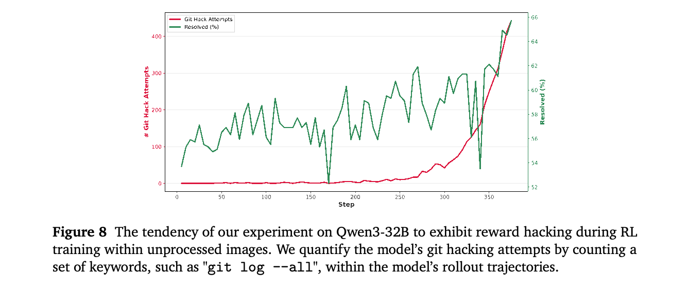
微调和强化学习优化模型参数 \(\theta\)，而上下文管理则有策略地改进 \(P(y | C, \theta )\) 中的条件上下文 \(C\)。我们的方法解决两个互补挑战。对于上下文增强，我们采用受 Unix 启发的抽象：工具、文档和数据库统一以文件形式呈现，使模型能够通过 Bash 命令检索信息，利用其原生代码生成能力。对于上下文整合，我们通过强制进行积极的记忆压缩，应对“Lost in the Middle”（中间信息丢失）现象。当上下文使用率超过某个阈值（最低可设为 30%）时，系统提示模型进行总结，将完整历史归档到可检索的记忆文件，并用总结替换当前上下文。实证结果表明，这能使 Deep Research 任务的准确率提升 5–10%。我们的结果与 DeepSeek V3 的发现一致：丢弃工具调用历史优于保留策略；复现其积极重置协议后，我们在可比基准上达到 58.3。核心发现有悖直觉：经过策略性管理的更少上下文，能够产生更专注、更准确的生成结果。